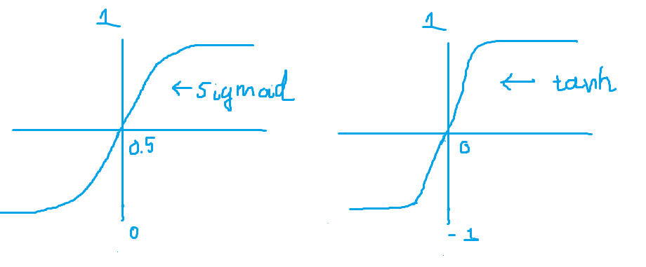
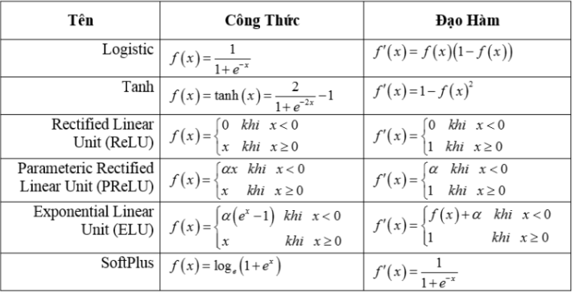
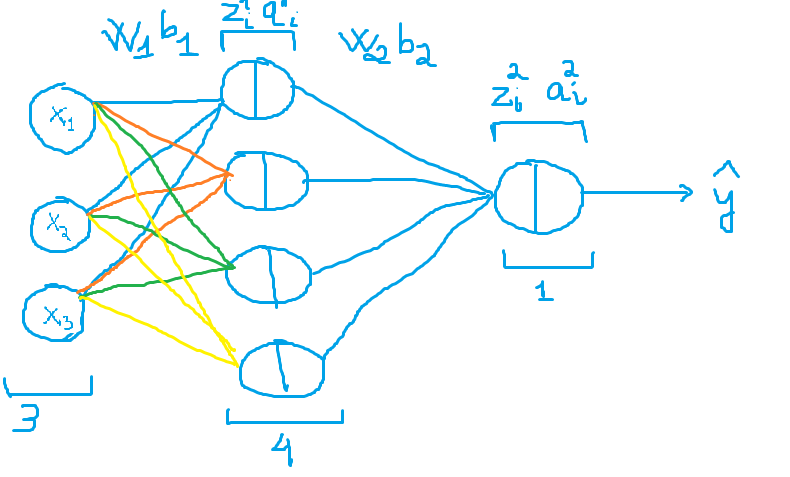
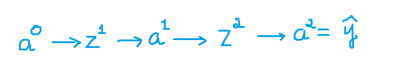
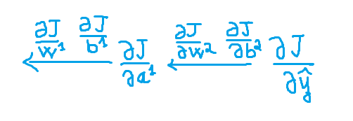
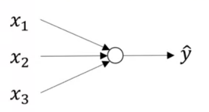
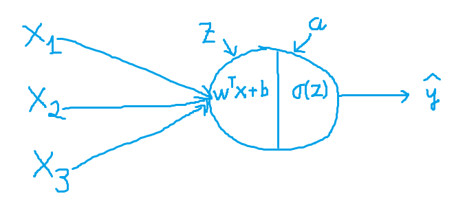
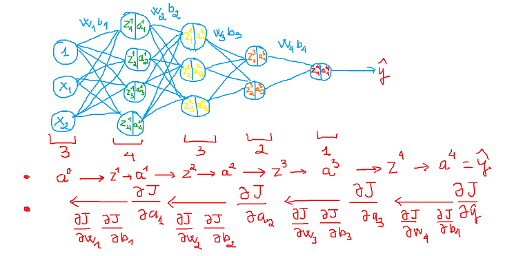

V. Neural Network
1. Shallow neural network
- Khi nghe đến cái tên Neural Network, chúng ta có cảm giác nó bao gồm rất nhiều lớp ẩn nhưng có một loại mạng thần kinh với số lượng lớp ẩn ít. Mạng nơron nông chỉ bao gồm 1 hoặc 2 lớp ẩn. Hiểu được mạng nơron nông cho chúng ta cái nhìn sâu sắc về những gì chính xác đang diễn ra bên trong mạng nơron sâu.
- Cách hiểu đơn giản khác về mạng nơ-ron nông đó là về Logistic regression hay Perceptron learning algorithm
- Neural network có thể hiểu là các stack xếp chồng của hồi quy logistic
- Neural là 1 tính từ (nơ-ron),network chỉ là 1 cấu trúc, cách mà các nơ-ron đó liên kết với nhau, nên NN có thể tính toán lấy cảm hứng từ sự hoạt động của các nơ-ron hệ thần kinh
-
Chúng tính toán đơn giản với 2 bước:
*Tính tổng linear:
*Áp dụng hàm sigmoid:
=> Hàm sigmoid ở đây sẽ được gọi hàm kích hoạt (activation function) - Mô hình tổng quát:
*Layer đầu tiên là input layer, các layer ở giữa được gọi là hidden layer, layer cuối cùng được gọi là output layer. Các hình tròn được gọi là node.
*Mỗi mô hình luôn có 1 input layer, 1 output layer, có thể có hoặc không các hidden layer. Tổng số layer trong mô hình được quy ước là số layer - 1 (không tính input layer).
*Mỗi node trong hidden layer và output layer: Liên kết với tất cả các node ở layer trước đó với các hệ số w riêng, Diễn ra 2 bước: tính tổng linear và áp dụng activation function. - Thỏa luận về hàm kích hoạt (activation function)
* Hàm kích hoạt được sử dụng sau khi tính tổng linear trong neural network, các hàm kích hoạt này thường là các non-linear.
* Hàm kích hoạt phải là phi tuyến tính bởi vì nếu hàm kích hoạt tuyến tính ở 1 layer thì layer này hay layer tiếp theo cũng sẽ tuyến tính vì vậy thì có thể góp lại thành 1 layer. Vì hợp của hàm tuyến tính sẽ ra 1 hàm tuyến tính.
* Hàm kích hoạt sigmoid có giá trị nằm từ (0,1) và là 1 hàm liên tục. Công thức: , trong đó z là ma trận đầu vào.
* Hàm kích hoạt tank có giá trị nằm ở từ (-1,1). Công thức: a = np.tanh(z), trong đó z là ma trận đầu vào.
* Hàm tanh và hàm sigmoid thì hàm tanh được hay sử dụng nằm ở lớp ẩn hơn vì nó đưa giá trị về giá trị trung tâm,mean về 0 thay vì đưa về 0.5, dữ liệu nằm ở giữa thì tốt cho lớp kế tiếp. Còn hàm sigmoid thì được lựa chọn làm đầu ra khi bài toán phân loại nhị phân.

Minh họa về hàm kích hoạt sigmoid và tanh
*Nhược điểm của 2 hàm tanh và sigmoid đó là đầu vào dương vô cùng hay âm vô cùng thì đạo hàm của 2 hàm này sẽ gần với 0, điều này sẽ ảnh hưởng tới việc các hệ số tương ứng với cái unit mình đang xét có thể không cập nhật được gì khi sử dụng GD (Vanishing gradient).
*Một hàm kích hoạt gần đây được sử dụng rộng rãi đó RELU: Hàm có công thức là: a = max(0,z). Có đạo hàm 1 khi điểm dương và 0 khi điểm âm . Mặc dù có nhược điểm đạo bằng 0 khi điểm âm tuy nhiên có thể khắc phục bằng việc tăng số hidden unit lên.

Một số hàm kích hoạt phổ biển và đạo hàm kích hoạt -
Tính toán cụ thể trong mạng nơ-ron hơn:

Kiến trúc mạng nơ-ron đơn giản
*Hình dạng của các layer: nx1 (số lớp ẩn) = 4, nx2 (input) = 3
*W1 là trọng số của lớp ẩn thứ 1 có dạng là (nx1,nx2) = (4,3)
*b1 có dạng là (nx1,1) = (4,1)
*z1 là kết quả của pt: có dạng là (4,3) * (1,4) + (4,1) = (nx1,1) = (4,1).
*a1 là kết quả của phương trình z1 có dạng là (nx1,1) = (4,1).
*W2 là trọng số lớp ẩn thứ 2 có dạng là (1,nx1) = (1,4)
*b2 có dạng (1,1)
*z2 có dạng là (1,1)
*a2 có dạng là (1,1)
-
Cập nhật trọng số theo phương pháp GD:
*Lan truyền tiến(Feedforward):
*
*
*
*
*Lan truyền ngược(backforward):
Lan truyền tiến (Feedforward)
*Áp dụng chain rule để tính toán đạo hàm.
*
*
*
*
*
*

Lan truyền ngược(backforward) - Khởi tạo trọng số.
*Trong mạng nơ-ron , chúng ta cần khởi tạo trọng số ngẫu nhiên, nếu chúng ta khởi tạo trọng số bằng 0 thì quá trình training nó sẽ không hoạt động bởi vì tất cả đơn vị ẩn giống hệt nhau, chính xác là tính toán các hàm như nhau, và tất cả đơn vị ẩn cập nhật như nhau ở từng lần lặp Gradient descent.
*Tuy nhiên khởi tạo trọng số ngẫu nhiên quá lớn hoặc quá nhỏ thì ảnh hướng rất lớn tới vấn đế training và vấn Vanishing/ exploding gradient thường thì khởi tạo trọng số theo công thứ He Initialization / Xavier Initialization.
*Khởi tạo được chọn tốt có thể: Tăng tốc độ hội tụ của gradient descent và Tăng tỷ lệ hội tụ gradient descent thành lỗi huấn luyện thấp hơn (và tổng quát hóa).

Minh họa mạng nơ-ron nông
Minh họa mạng nơ-ron nông

2. Deep Neural Network
- Chúng ta đã tìm hiểu qua mạng nơ-ron nông thì mạng nơ-ron sâu chính là bản nâng cấp của mạng nơ-ron nông, khi đó số lớp ẩn trong mạng nơ-ron được tăng lên.
- Deep Neural Network được xây dựng với mục đích mô phỏng hoạt động não bộ phức tạp của con người và được áp dụng vào nhiều lĩnh vực khác nhau, mang lại thành công và những hiệu quả đáng kinh ngạc cho con người.
- Mọi hoạt động hay tính toán đều tương tự như mạng nơ-ron nông, tuy nhiên deep neural network sẽ khó tính toán hơn 1 chút với số lớp ẩn tăng lên và cần tính toán kĩ lưỡng hơn tránh bị nhầm.
- Một số ký hiệu mới: "l" chính là số lớp trong mạng, n[l] số nơ-ron của lớp cụ thể nào đó.
- Trong deep neural network dễ nhầm lẫn nhất là kích thước hình dạng của các tham số khi chúng xây dựng model hoàn toàn bằng tay mà không sử dụng thư viện. Kích thước của W là (n[l],n[l-1]), b là (n[l],1), dW có shape tương tự với W, Z[l],A[l],dZ[l],dA[l] (n[l],m)
- Một câu hỏi thú vị: Why Deep Representations ? Mạng lưới thần kinh sâu tìm mối quan hệ với dữ liệu (quan hệ đơn giản đến phức tạp). Lớp ẩn đầu tiên có thể đang làm gì, đang cố gắng tìm các hàm đơn giản như xác định các cạnh trong ảnh trên. Và khi chúng ta đi sâu hơn vào mạng, các chức năng đơn giản này kết hợp với nhau để tạo thành các chức năng phức tạp hơn như nhận diện khuôn mặt.
- Các tham số quan trọng:
*Learning rate.
*Số lớp ẩn.
*Số đơn vị ẩn nơ-ron
*Số vòng lặp.
*Hàm kích hoạt

Minh họa mô hình deep neural network
Minh họa mô hình deep neural network
3. Né tránh vấn đề overfitting trong neural network
Trong các bài toán của machine learning khi ta xây dựng mô hình thì đều có khả năng mô hình của bạn bị overfitting, thì trong bài toán neural network cũng vậy. Trong phần này mình sẽ giới thiệu các phương pháp tránh overfit, mặc dù mình đã có giới thiệu ở chương 1 nếu bạn chưa đọc thì hãy quay lại đọc đã nhé.
- Thì cũng là phương pháp thêm tham số tiêu chuẩn (Regularization):
- 2 chuẩn mà ta có thể thêm vào đó là: L1-norm, L2-norm.
- Trong bài toán Shallow neural network điển hình ta sẽ sử dụng logistic regression để biểu diễn regularization
* Hàm chi phí:
* Khi thêm l1-norm vào:
* Khi chúng ta thêm l1-norm vào thì chúng ta sẽ thu được 1 ma trận thưa thớt, chứa các trọng số bằng không mà chúng ta sử dụng L1 để nén mô hình làm cho mô hình đơn giản lại.
* Khi thêm l2-norm vào:
* L2-norm được sử dụng nhiều hơn. - Regularization DNN
*Hàm chi phí:
* Khi thêm l2-norm vào:
- Câu hỏi: Tại số tiêu chuẩn có thể giúp model đỡ bị overfitting: Nếu lambda quá lớn - nhiều w sẽ gần bằng 0, điều này giúp mạng nơron đơn giản hơn (các bạn có thể coi nó hoạt động gần giống hồi quy logistic. Nếu lambda đủ tốt, nó sẽ giảm một vài trọng số khiến mạng nơron quá khớp. Nếu như chúng ta sử dụng hàm kích hoạt tanh, thì khi lambda quá lớn, w sẽ nhỏ (gần bằng 0) - chúng ta sẽ dùng các phần tuyến tính của hàm kích hoạt tanh nên hãy đi từ kích hoạt phi tuyến tính tới gần tuyến tính, làm cho mạng nơron thành phân loại gần như tuyến tính.
- Dropout:
- Chính là loại ngẫu nhiên các đơn vị ra khỏi mạng nơ-ron, sẽ làm như vậy ở mỗi vòng lặp, nếu như vậy chúng ta sẽ làm việc mạng nơ-ron nhỏ hơn.
- Sử dụng mạng nơron nhỏ hơn giống như có tác dụng điều chuẩn.
*Không thể dựa vào một đặc trưng nên chúng ta cần trải rộng các trọng số.
*Không thể chỉ ra dropout có tác động tương tự với điều chuẩn L2.
*Dropout có thể có keep_prob khác ở mỗi lớp. *Nếu như chúng ta sợ 1 số lớp quá khớp các lớp khác thì chúng ta có keep_prob thấp hơn vài lớp, nếu làm như lày thì khó kiểm định chéo. - Kỹ thuật dropout được thực hiện như sau:
- Quá trình training: Đối với mỗi lớp ẩn, mỗi example, mỗi vòng lặp, ta sẽ bỏ học 1 cách ngẫu nhiên với xác suất (1 - p) cho mỗi nút mạng.
- Sử dụng toàn bộ activations, nhưng giảm chúng với tỷ lệ p (do chúng ta bị miss p% hàm activation trong quá trình train).
- Nếu 1 lớp fully connected có quá nhiều tham số và chiếm hầu hết tham số, các nút mạng trong lớp đó quá phụ thuộc lẫn nhau trong quá trình huấn luyện thì sẽ hạn chế sức mạnh của mỗi nút, dẫn đến việc kết hợp quá mức.
- Giá trị dropout tốt nhất là 0.2, khoảng dropout cho giá trị chấp nhận được là nằm trong đoạn từ 0 đến 0.5. Nếu dropout lớn hơn 0.5 thì kết quả hàm huấn luyện trả về khá tệ.
- Early stopping
- Early stopping là một trong những chiến lược được sử dụng phổ biến vì nó rất đơn giản và khá hiệu quả. Nó đề cập đến quá trình dừng đào tạo khi lỗi đào tạo không còn giảm nữa nhưng lỗi xác nhận bắt đầu tăng lên.
- Điều này ngụ ý rằng chúng tôi lưu trữ các thông số có thể đào tạo theo định kỳ và theo dõi lỗi xác thực. Sau khi quá trình đào tạo dừng lại, chúng tôi trả lại các thông số có thể đào tạo về điểm chính xác mà lỗi xác thực bắt đầu tăng lên, thay vì những thông số cuối cùng.
- Một cách khác để nghĩ về việc dừng sớm là như một thuật toán lựa chọn siêu tham số rất hiệu quả, đặt số kỷ nguyên ở mức tốt nhất tuyệt đối. Về cơ bản, nó hạn chế quy trình tối ưu hóa ở một lượng nhỏ của không gian tham số có thể đào tạo gần với các tham số ban đầu
- Batch-normalization
- Chuẩn hóa đầu vào: Chúng ta sẽ chuẩn hóa đầu vào sẽ giúp model hoạt động tốt hơn và thời gian trainnig cũng nhanh hơn.
- Nếu như không chuẩn hóa thì hàm chi phí sẽ sâu và hình dạng không đồng nhất, tốn thời gian tối ưu.
- Chúng ta thường ta chỉ chuẩn hóa đầu vào mà không biết có nên cần chuẩn hóa đầu vào của các lớp ẩn hay không ? Có nhé !!!
- Phương trình:
- Mặc dù chuẩn hóa batch ở các lớp ẩn có thể giống ở chuẩn hóa đầu vào đưa các giá trị mean = 0 và std = 1, tùy nhiên trong các lớp ẩn chúng ta không mong muốn dữ liệu đều đưa về như vậy, mean std có thể khác đi để tận dụng phi tuyến tính trong activation function. Để kiểm soát vấn đề mean,std chúng ta có thể điều chỉnh 2 tham số gamma và beta
- Điều này thêm nhiễu vào giá trị z[l] trong minibatch. Nó giống như dropout, điều này thêm nhiễu vào các kích hoạt của từng lớp ẩn
- Câu hỏi: Tại sao BN lại hoạt động:
* Lý do đầu tiên cũng giống lý do chúng ta chuẩn hóa X.
* Lý do thứ hai là chuẩn hóa batch giảm vấn đề thay đổi (dịch chuyển) giá trị đầu vào. - Một số ưu điểm BN:
*BN tăng tốc đào tạo mạng nơ-ron sâu.
*Đối với mini-batch đầu vào, chúng tôi tính toán các số liệu thống kê khác nhau. Điều này giới thiệu một số loại chính quy hóa. Quy định hóa đề cập đến bất kỳ hình thức kỹ thuật / ràng buộc nào hạn chế sự phức tạp của mạng nơ-ron sâu trong quá trình đào tạo.
*BN cũng có ảnh hưởng có lợi đến dòng chảy gradient qua mạng. Nó làm giảm sự phụ thuộc của gradient vào quy mô của các tham số hoặc giá trị ban đầu của chúng. Điều này cho phép chúng tôi sử dụng tỷ lệ học tập cao hơn nhiều. - Một số nhược điểm BN:
*Ước tính không chính xác thống kê lô với kích thước lô nhỏ, làm tăng lỗi mô hình. Trong các tác vụ như dự đoán video, phân đoạn và xử lý hình ảnh y tế 3D, kích thước lô thường quá nhỏ. BN cần số lượng lô đủ lớn

Dropout

Early stopping

Chuẩn hóa dữ liệu
4. Tối ưu mô hình
4.1. Gradient descent
Phần này thì quay lại chương 1 mục số 13 để đọc nhé, mình viết kĩ ở đó rồi nên sẽ không viết lại nữa.4.2. Cải tiến Gradient descent
- Thuật toán GD theo momentum:
- Thông thường GD là mini-bactch hoặc stochastics kết hợp với momentum.
- Ý tưởng đơn giản đó là tính toán trung bình cộng theo số nhân rồi mới cập nhật trọng với các giá trị mới
- Và có thêm 1 tham số mới đó beta, beta thường nằm ở 0.9 đến 0.98, Beta = 0.9 thì thường nó sẽ tính 10 entry cuối,0.98 thì 50, 0.5 thì 2 entry
- Khi beta này cao thì nó sẽ làm phằng trung bình các điểm dữ liệu bị lệch. Do vậy điều này giảm dao động trong GD, khiến đường dẫn tới cực tiểu nhanh hơn.
- Công thức tổng quát: ,
- Thuật toán momentum được ra đời nhằm khắc phục việc nghiệm của GD rơi vào một điểm local minimum không mong muốn.
- Thuật toán RMSprop (root mean square prop):
- Đây cũng là 1 thuật tăng tốc độ GD, Về cơ bản thì RMSprop hoạt động khá tương tự Momentum
- RMSprop có khiến hàm chi phí di chuyện chậm theo hướng dọc và nhanh hơn theo phương ngang
- Công thức:
- Thuật toán RMSprop có thể cho kết quả nghiệm chỉ là local minimum chứ không đạt được global minimum như Momentum. Vì vậy người ta sẽ kết hợp cả 2 thuật toán Momentum với RMSprop cho ra 1 thuật toán tối ưu Adam.
- Thuật toán Adam:
- Như đã nói ở trên Adam là sự kết hợp của Momentum và RMSprop . Nếu giải thích theo hiện tượng vật lí thì Momentum giống như 1 quả cầu lao xuống dốc, còn Adam như 1 quả cầu rất nặng có ma sát, vì vậy nó dễ dàng vượt qua local minimum tới global minimum và khi tới global minimum nó không mất nhiều thời gian dao động qua lại quanh đích vì nó có ma sát nên dễ dừng lại hơn
- Công thức:
*vdw = (beta1 * vdw) + (1-beta1) * dw, vdb = (beta1 * vdb) + (1 - beta1) * db
*sdw = (beta2 * sdw) + (1 - beta2) * dw2 , sdb = (beta2 * sdb) + (1 - beta2) * db2
*vdw = vdw / (1-beta1^t),vdb = vdb / (1-beta1^t)
*sdw = sdw / (1-beta2^t),sdb = sdb / (1-beta2^t)
*w = w - learing_rate * vdw / (sqrt(sdw) + epsilon)


Minh họa SGD và SGD with momentum(Nguồn: Machine learning cơ bản)
Còn thiếu nhiều phần sẽ được update sau nhé hihi!!!